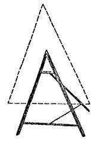

МИНИСТЕРСТВО АВТОМОБИЛЬНЫХ ДОРОГ РСФСР
ИНСТРУКЦИЯ
ПО ОРГАНИЗАЦИИ ДВИЖЕНИЯ
И ОГРАЖДЕНИЮ МЕСТ
ПРОИЗВОДСТВА
ДОРОЖНЫХ РАБОТ
ВСН 37-84
Минавтодор РСФСР
МОСКВА «ТРАНСПОРТ» 1985
СОДЕРЖАНИЕ
МИНИСТЕРСТВО АВТОМОБИЛЬНЫХ ДОРОГ РСФСР
|
|
Утверждена Минавтодором РСФСР 05.03.84 |
|
|
|
|
Согласована ЦК профсоюза рабочих автомобильного транспорта и шоссейных дорог |
Согласована Главным управлением Госавтоинспекции МВД СССР |
ИНСТРУКЦИЯ
ПО ОРГАНИЗАЦИИ ДВИЖЕНИЯ
И ОГРАЖДЕНИЮ МЕСТ
ПРОИЗВОДСТВА
ДОРОЖНЫХ РАБОТ
МОСКВА «ТРАНСПОРТ» 1985
Инструкция переработана с учетом основных положений «Инструкции по ограждению мест работ к расстановке дорожных знаков при строительстве, реконструкции и ремонте автомобильных дорог (ВСН 179-73).
В ней даны рекомендуемые схемы организации движения при проведении работ на горизонтальных участках, подъемах, спусках, пересечениях, примыканиях, в населенных пунктах, на мостах, на порогах и горной местности.
Переработана под руководством и при участии канд. техн. наук В.Д. Белова, сотрудниками Гипродорнии - инженерами А.А. Кукушкиным (ответственный исполнитель), А.В. Бабковым, Н.А. Тереховой, Н.П. Чуриловой, канд. техн. наук В.С. Адасинским, В.В. Чвановым, совместно с сотрудниками Союздорнии - канд. техн. наук Ю.С. Крыловым, инженером Л.И. Брызгаловой, В.С. Скирута, Н.А. Шуриновой, сотрудниками ВНИИБД - канд. техн. наук Б.Н. Баваровым, В.В. Новизенцевым, инженерами С.Г. Бачмановым, В.Я. Буйленко, Я.С. Репиным и сотрудниками ГУ ГАИ МВД СССР Ю.С. Остроумовым, Н.Г. Бородиным, А.В. Матюхиным.
Предназначена для организаций, занимающихся реконструкцией, ремонтом и содержанием автомобильных дорог независимо от их ведомственного подчинения.
|
Министерство автомобильных дорог РСФСР |
Ведомственные строительные нормы |
ВСН |
|
|
Инструкция по организации движения и ограждению мест производства дорожных работ |
Взамен |
1.1. Инструкция определяет порядок и способы организации движения транспортных средств и пешеходов в местах производства дорожных работ, обеспечивающие безопасность как работающих на дороге, так и всех участников дорожного движения.
Инструкция рекомендуется к применению в других министерствах и ведомствах, проводящих работы на автомобильных дорогах.
|
Внесена |
Утверждена Министерством автомобильных дорог РСФСР 5 марта 1984 г |
Срок введения с 1 октября 1985 г |
1.2. Организация движения транспорта и пешеходов и ограждение мест дорожных работ при строительстве, реконструкции, ремонте и содержании автомобильных дорог следует выполнять в соответствии с настоящей Инструкцией, разработанной на основе действующих нормативных документов.
1.3. До начала дорожных работ дорожная организация должна составить привязанные к местности схемы организации движения транспортных средств и пешеходов на участке проведения работ. На схемах показывают геометрические параметры ремонтируемого участка (ширина проезжей части и обочин, радиусы кривых в плане, продольный уклон, тип покрытия и т.д.) с указанием искусственных сооружений, расположения съездов, разъездов и объездов, мест расстановки дорожных знаков, нанесения при необходимости временной разметки, ограждений, расположения сигнальных фонарей, складирования строительных материалов. На схеме указывают вид и характер дорожных работ, сроки их исполнения, наименование организации, проводящей работы, телефоны и фамилии должностных лиц, составивших схему и ответственных за проведение работ. Схемы организации движения и ограждения мест производства дорожных работ должны быть утверждены руководителем дорожной организации и заблаговременно согласованы с органами Государственной автомобильной инспекции (ГАИ).
1.4. Согласование с ГАИ производится при выполнении всех видов дорожных работ в пределах полосы отвода, за исключением работ по содержанию дорог. В случае устройства объездов должны быть согласованы их маршруты. В местах краткосрочных дорожных работ (ликвидация ямочности, замена дорожных знаков, разметка проезжей части и т.д.), учитывая подвижный характер их проведения, с органами ГАИ согласовывают только схемы организации движения и ограждения с указанием границ участков работ без конкретной привязки к местности.
1.5. При выполнении дорожных работ, связанных с переносом или переустройством инженерных коммуникаций (газопровод, водопровод, кабели и т.д.), схемы организации движения и ограждения мест производства дорожных работ необходимо согласовывать со всеми заинтересованными организациями, а затем с органами ГАИ.
1.6. На границах участков дорожных работ следует установить информационные щиты, на которых указывают организацию, фамилию ответственного лица, руководящего работами, и номер его служебного телефона.
1.7. При выполнении работ по содержанию автомобильных дорог (уборка мусора, мойка знаков, ограждений, их окраска и т.д.) составление схем не производится, но местные органы ГАИ ставят в известность о проведении таких работ.
1.8. Неотложные работы по устранению случайных повреждений дороги и дорожных сооружений, нарушающих безопасность движения, а также аварийные работы, можно выполнить без предварительного согласования и утверждения схем, но с условием обязательного извещения органов ГАИ о месте и времени проведения таких работ, если их продолжительность составляет более одних суток.
1.9. К обустройству участка работ временными знаками и ограждениями следует приступать только после согласования схемы с органами ГАИ и ее утверждения руководителем дорожной организации.
1.10. При организации движения в местах производства дорожных работ должны применяться все необходимые технические средства, предусмотренные схемой. Всякое отклонение от утвержденных схем, а также применение неисправных технических средств недопустимо.
1.11. До полного обустройства ремонтируемого участка временными знаками и ограждениями запрещается размещать на проезжей части и обочинах дорожные машины, инвентарь, материалы для ремонта.
1.12. К выполнению дорожных работ, в том числе размещению дорожных машин, инвентаря, материалов, нарушающих режим движения, разрешается приступать после полного обустройства места работ всеми необходимыми временными дорожными знаками и ограждениями.
1.13. За границы участка дорожных работ следует считать первое и последнее ограждающее средство, установленное на проезжей части, обочине или тротуаре и изменяющее направление движения.
1.14. Перед началом работ рабочие и машинисты дорожных машин должны быть проинструктированы по технике безопасности и схеме ограждения места работ, о применяемой условной сигнализации, подаваемой жестами и флажками, о порядке движения, маневрирования дорожных машин и транспортных средств в местах разворота, въездах и съездах, местах складирования материалов и хранения инвентаря.
1.15. Применяемые при дорожных работах временные дорожные знаки, ограждения и другие технические средства (конусы, вехи, стойки, сигнальные шнуры, сигнальные фонари, разметка и т.д.) устанавливают и содержат, организации, выполняющие дорожные работы.
1.16. Ответственность за соблюдение требований настоящей Инструкции возлагается на руководителей дорожных хозяйств и на лиц, непосредственно руководящих дорожными работами, а при производстве работ сторонними организациями - на соответствующих работников этих организаций.
1.17. О месте и сроках выполнения дорожных работ в случае устройства объездов или ухудшении условий движения общественного транспорта по ремонтируемому участку дорожная организация должна заблаговременно извещать предприятия общественного транспорта.
2.1. При составлении схем организации движения в местах производства дорожных работ, необходимо выполнение следующих требований:
а) предупредить заранее водителей транспортных средств и пешеходов об опасности, вызванной дорожными работами:
б) четко обозначить направление объезда имеющихся на проезжей части препятствий, а при устройстве объезда ремонтируемого участка - его маршрут;
в) создать безопасный режим движения транспортных средств и пешеходов как на подходах, так и на самих участках проведения дорожных работ.
2.2. Основными средствами организации движения в местах производства дорожных работ являются временные дорожные знаки, разметка проезжей части, ограждающие и направляющие устройства и другие технические средства (см. пп. 4.1 - 4.37).
Под временными дорожными знаками следует понимать те знаки, которые устанавливают только на время проведения дорожных работ.
2.3. Для лучшего восприятия водителями дорожных знаков рекомендуется устанавливать на одной опоре не более двух знаков и одной таблички, при этом с запрещающими знаками рекомендуется устанавливать предупреждающие знаки, которые поясняли бы причину введения ограничений.
2.4. Расстановку знаков, ограждающих и направляющих устройств необходимо осуществлять с конца участка, наиболее удаленного от места работ, причем в первую очередь со стороны, свободной от дорожных работ. Сначала устанавливают дорожные знаки, затем ограждающие и направляющие устройства. Снятие знаков, ограждающих и направляющих устройств производится в обратной последовательности.
2.5. На дорогах вне населенных пунктов для обеспечения видимости ограждающие и направляющие устройства в темное время суток должны быть снабжены световозвращающими элементами размером 5×5 см, а на автомагистралях размером 10×10 см, закрепленными на верхней перекладине, ограждающих устройств через 0,5 м. В случае проведения дорожных работ в застроенной местности место работ должно быть обозначено сигнальными фонарями и иметь освещение в соответствии с нормативными документами. На автомагистралях, оборудованных осветительными установками, зона дорожных работ должна быть обозначена сигнальными фонарями, установленными на переносных барьерах или щитах. Их размещают из расчета 1 фонарь на 1 м длины барьера или щита, установленного поперек дороги. Если инвентарные щиты устанавливают вдоль дороги, то фонари размещают на них через 15 м, при этим барьеры и щиты должны быть оборудованы устройствами для крепления фонарей.
Цвет сигнальных огней или световозвращающих элементов, применяемых совместно с ограждающими устройствами, должен быть красным.
Сигнальные фонари устанавливают на высоте 1,5 - 2 м над уровнем проезжей части. Мощность ламп в светильниках не должна превышать 15 - 25 Вт. Расстояние их видимости при нормальной прозрачности атмосферы должно равняться 100 - 300 м. Они не должны вызывать ослепленных участков движения. Сигнальные фонари включают с наступлением вечерних сумерек, выключают с окончанием утренних сумерек. В дневное время фонари включают при наличии дымной мглы или тумана. Допускается установка мигающих сигнальных фонарей с частотой мигания 50 - 80 в минуту.
2.6. Особо опасные места (траншеи, котлованы, ямы, устраиваемое при укреплении обочин корыто глубиной 0,1 м и более) необходимо ограждать, применяя сигнальные шнуры или направляющие конусы, а также инвентарные щиты или барьеры, которые устанавливают на всем протяжении зоны работ через 15 м и оборудуют сигнальными фонарями. При отсутствии электрического освещения такие места в темное время суток должны быть обозначены факелами. В населенных пунктах ограждающие щиты или барьеры оборудуют сигнальными фонарями, которые зажигают с наступлением сумерек.
2.7. Для сохранения оптимальной пропускной способности дороги не следует без необходимости ограничивать скорость движения в местах дорожных работ менее 40 км/ч.
2.8. Движение со скоростью менее 40 км/ч на участках производства дорожных работ допускается только в исключительных случаях, когда геометрические параметры дороги, качество покрытия, условия работ или погодные условия не позволяют осуществлять движение с большей скоростью.
2.9. Для плавного изменения скоростей транспортных средств перед участком дорожных работ необходимо производить последовательное снижение скорости ступенями с шагом не более 20 км/ч. Временные дорожные знаки, регламентирующие ступенчатое ограничение скоростей, располагают друг от друга на расстоянии не менее 100 м. Число знаков, ограничивающих скорость, зависит от разности скоростей до и после ограничения.
2.10. Для разделения встречных потоков транспортных средств в местах дорожных работ, обозначения рядности и обеспечения безопасной траектории движения используют переносные направляющие конусы, вехи или стойки. Этой же цели служит нанесенная на проезжую часть временная разметка и дорожные знаки.
В исключительных случаях при невозможности встречного разъезда и устройства уширения проезжей части в обязательном порядке вводят регулирование движения с помощью светофоров или регулировщиков.
2.11. На многополосных дорогах для обеспечения безопасных траекторий движения в местах производства дорожных работ целесообразно совместное применение направляющих конусов, вех или стоек с разметкой проезжей части.
2.12. При нанесении на проезжую часть в местах дорожных работ линий разметки, расстановке направляющих конусов или вех отклоняющих транспортные потоки, длину отгона Lотг следует назначать в соответствии с табл. 2.1. Пример размещения технических средств организации в местах производства дорожных работ показан на рис. 2.1.
2.13. При выполнении небольших по объему работ на проезжей части (мелкий ямочный ремонт, разметка проезжей части и т.д.) для обеспечения наименьшей потери времени проходящими автомобилями длину закрываемого участка следует выбирать минимальной с учетом требований технологии работ.
2.14. При временном переносе остановок общественного транспорта из зоны дорожных работ их оборудование и организация движения в зоне временных остановок должны учитывать условия создания наименьших помех транзитному транспорту со стороны транспортных средств, стоящих на остановках.
2.15. Все временные дорожные знаки и другие технические средства организации движения, связанные с проводимыми работами, после завершения работ следует немедленно убирать.
Таблица 2.1
Рекомендуемая длина отгона ширины проезжей части, закрываемой для движения при различной скорости на подходе
2.16. Размеры временных знаков, используемых для организации движения в местах производства дорожных работ, не должны быть менее тех, которые применяются для данной категории дороги, а при ремонтных работах на автомагистралях применяют знаки увеличенного размера в соответствии со стандартом на дорожные знаки.
2.17. На автомагистралях с высокой среднесуточной интенсивностью движения целесообразно проводить дорожные работы в период спада интенсивности или в ночное время, при этом зона дорожных работ должна иметь освещение в соответствии с нормативными документами.
Рис. 2.1. Пример размещения технических средств организации движения в местах производства дорожных работ:
1 - разметка проезжей части; 2 - направляющие конусы; 3 - кромка проезжей части; 4 - зона дорожных работ; 5 - ограждающие барьеры; 6 - сигнальные фонари или световозвращающие элементы:
S - ширина проезжей части; Lотг - длина отгона ширины зоны дорожных работ; l - расстояние между конусами
Прямые участки с обеспеченной видимостью
3.1. Выбор схемы организации движения зависит от вида и места производства работ. При этом следует учитывать местные условия движения и, если требуется, вносить в схему коррективы до согласования с органами ГАИ.
На приведенных ниже схемах организации движения и ограждения места дорожных работ обозначены временные дорожные знаки, которыми необходимо дополнить дорожные знаки, установленные на дороге постоянно.
3.2. При проведении работ на обочине двухполосных дорог организацию движения и ограждение места работ выполняют в соответствии с рис. 3.1.
3.3. При производстве дорожных работ на половине ширины проезжей части двухполосных дорог пропуск транспортных средств в обоих направлениях осуществляют по свободной полосе (рис. 3.2).
Знаки 2.6 и 2.7 следует применять в тех случаях, когда длина участка работ при существующей интенсивности движения обеспечивает саморегулирование встречного разъезда и видимость всей зоны ремонтных работ с каждой стороны узкого участка. Максимальную длину ремонтируемого участка в этом случае необходимо назначать в соответствии с табл. 3.1. Иначе нужно вводить регулирование движения с помощью светофоров или регулировщиков, либо осуществлять пропуск транспортных средств по обочине (рис. 3.3). В этом случае она должна быть спланирована и укреплена, а при необходимости и уширена.
Таблица 3.1
Максимальная длина ремонтируемого участка
|
Интенсивность движения, авт./ч |
Протяженность ремонтируемого участка, м |
Протяженность ремонтируемого участка, м |
|
|
100 |
350 |
400 |
50 |
|
200 |
150 |
500 |
30 |
|
300 |
80 |
|
|
3.4. При производство дорожных работ на одной из полос трехполосной дороги средняя полоса, обычно предназначенная для совершения обгонов, теряет свою функцию. При дорожных работах на крайней полосе трехполосной дороги организацию движения и ограждение места работ следует выполнять в соответствии с рис. 3.4. При работах на средней полосе организуют движение и ограждают место работ в соответствии с рис. 3.5.
3.5. Если дорожные работы ведутся на внешней полосе четырехполосной дороги с разделительной полосой, организацию движения и ограждение места работ осуществляют в соответствии с рис. 3.6.
Если интенсивность движения по внешней полосе превышает 400 авт./ч и в составе потока более 40 % грузовых автомобилей, то дорожные знаки, установленные на обочине, необходимо дублировать, устанавливая их на разделительной полосе.
Рис. 3.1. Организация движения и ограждение места дорожных работ, выполняемых на обочине двухполосных дорог
Рис. 3.2. Организация движения и ограждение места дорожных работ, выполненных на половине ширины проезжей час двухполосных дорог
При выполнении дорожных работ на разделительной полосе многополосной дороги расстановку дорожных знаков следует выполнить в соответствии с рис. 3.7.
3.6. На дорогах с разделительной полосой, имеющих четыре и более полос движения, в случае закрытия половины ширины проезжей части на период дорожных работ для пропуска транспортных средств следует устраивать специальные проезды через разделительную полосу (рис. 3.8).
С целью заблаговременного оповещения водителей транспортных средств о предстоящем перестроении вне населенных пунктов за 500 м до разрыва в разделительной полосе устанавливают знак 5.36 «Перестроение в другую проезжую часть» с табличкой 7.1.1. «Расстояние до объекта». В населенных пунктах знак 5.36 с табличкой 7.1.1 устанавливают на расстоянии 50 - 100 м от место разрыва в разделительной полосе.
3.7. В случае устройства на двухполосных дорогах уширения проезжей части на полосу движения для обеспечения бесперебойного пропуска транспортных средств на участках дорожных работ длиной более 30 м организацию движения и ограждения зоны работ следует выполнять в соответствии с рис. 3.9.
3.8. В целях более полного использования инерции разгона в местах производства работ на затяжных подъемах допускается скорость транспортных средств 60 км/ч, если позволяют условия движения.
3.9. При выполнении дорожных работ на дополнительной полосе на подъеме следует организовать движение и ограждать место работ в соответствии со схемой, представленной на рис. 3.10. Если зона ремонтных работ расположена на расстоянии не более 200 м от начала дополнительной полосы, рекомендуется с помощью ограждающих устройств закрывать эту полосу от ее начала до конца зоны работ.
Рис. 3.3. Организация движения и ограждение места дорожных работ, выполняемых на половине ширины проезжей части двухполосных дорог в случае пропуска транспортных средств по обочине
Рис. 3.4. Организация движения и ограждение места дорожных работ, выполняемых на крайней полосе движения трехполосных дорог
Рис. 3.5. Организация движения и ограждение места дорожных работ, выполняемых на средней полосе движения трехполосных дорог
Рис. 3.6. Организация движения и ограждение места дорожных работ на четырехполосных дорогах закрытием движения по одной полосе
Рис. 3.7. Организация движения и ограждение мест дорожных работ, выполняемых на разделительной полосе многополосных дорог
Рис 3.8. Организация движения и ограждение места дорожных работ на четырехполосных дорогах с закрытием движения по двум полосам
Рис. 3.9. Организация движения и ограждение места дорожных работ в случае уширения проезжей части на участках, затяжных подъемов двухполосных дорог
Рис. 3.10. Организация движения и ограждение места дорожных работ, выполняемых на дополнительной полосе на подъеме
Проводя дорожные работы на основной полосе движения на подъеме, следует руководствоваться рис. 3.11, причем, если зона работ на основной полосе расположена менее чем в 200 м от начала дополнительной полосы, с помощью ограждающих устройств следует закрывать основную полосу на участке от начала полной ширины дополнительной полосы до конца зоны дорожных работ.
3.10. В случае ремонтных работ на полосе спуска организуют движение и ограждают место работ в соответствии с рис. 3.12. Если зона работ находится ближе 200 м от начала дополнительной полосы, следует с помощью ограждающих устройств закрывать основную полосу на участке от начала полной ширины дополнительной полосы до конца зоны дорожных работ.
Рис. 3.11. Организация движения и ограждение места дорожных работ, выполняемых на основной полосе движения на подъеме
Рис. 3.12. Организация движения и ограждение места дорожных работ на участке затяжного подъема при их выполнении на полосе спуска
Рис. 3.13. Организация движения и ограждение места дорожных работ на участках с ограниченной видимостью
Участки с ограниченной видимостью
3.11. Участки с ограниченной видимостью представляют собой существенную опасность для движения транспортных средств. При производстве дорожных работ на таких участках эта опасность увеличивается, поэтому за границу зоны дорожных работ необходимо принять начало участка с ограниченной видимостью и временные дорожные знаки установить перед этим участком.
3.12. При проведении дорожных работ на участках с ограниченной видимостью как в плане, так и в продольном профиле, организуют движение и ограждают место работ в соответствии с рис. 3.13.
Примыкания и пересечения
3.13. В зонах пересечений организация движения должна быть подчинена принципу очередности проведения дорожных работ, который состоит и следующем: работы начинают на второстепенных дорогах и отдельных элементах пересечений, постепенно переходя к наиболее загруженным, используя отремонтированные элементы для переключения на них движения.
3.14. В зоне пересечений и примыканий в одном уровне дорожные работы выполняют в три этапа:
1) дорожные работы на обочинах, при необходимости, строительство правоповоротных переходно-скоростных полос (рис. 3.14);
2) дорожные работы на проезжей части второстепенной дороги (на всей или по полосам) с переключением движения на отремонтированные обочины или правоповоротные переходно-скоростные полосы (рис. 3.15);
3) дорожные работы на проезжей части главной дороги (на всей ширине или по полосам, включая переходно-скоростные полосы для левого поворота) с переключением движения на обочины или правоповоротные переходно-скоростные полосы (рис. 3.16). В этом случае возможны два варианта организации движения при работах в центральной части пересечения: пропуск транспортных средств в объезд участка работ по обочинам главной дороги с перепробегом транспортного потока второстепенного направления и левоповоротного потока с главного направления; пропуск транспортных средств по отремонтированному участку главной дороги. Если видимость на перекрестке ограничивают работающие машины и механизмы, организацию движения осуществляют с помощью регулировщика.
Рис. 3.14. Организация движения и ограждение мест дорожных работ, выполняемых на обочинах пересечения в одном уровне:
1 - зона работ; 2 - направляющие конусы; 3 - ограждающие барьеры; 4 - существующие пешеходные переходы, закрываемые на период дорожных работ; 5 - автобусные остановки, перенесенные из зоны дорожных работ
Рис. 3.15. Организация движения и ограждение мест дорожных работ, выполняемых на проезжей части второстепенной дороги пересечения в одном уровне
Рис. 3.16. Организация движения и ограждение мест дорожных работ, выполняемых на проезжей части главной дороги:
1 - пропуск транспорта в объезд ремонтируемого участка по обочинам главной дороги
3.15. В случае проведения дорожных работ на пересечении или примыкании, где имеется пешеходное движение, например в местах остановок общественного транспорта, необходимо предусмотреть временный перенос остановок за пределы зоны ремонтных работ и оборудовать пешеходные дорожки к ним, а также устроить временные пешеходные переходы.
3.16. Если дорожные работы ведутся на обочине съезда развязки, пропуск транспортных средств осуществляют по проезжей части съезда. Организация движения и ограждение места работ для этого случая показаны на рис. 3.17 и рис. 3.18.
Рис. 3.17. Организация движения и ограждение места дорожных работ, выполняемых на внутренней обочине правоповоротного съезда пересечения в разных уровнях:
1 - направляющие конусы или вехи; 2 - зона работ; 3 - ограждающие барьеры
3.17. Если дорожные работы проводятся на проезжей части съезда развязки, движение транспортных средств осуществляют по прилегающей к проезжей части обочине (рис. 3.19 и рис. 3.20), которая предварительно планируется, а при необходимости и укрепляется.
Рис. 3.18. Организация движения и ограждение места дорожных работ, выполняемых на внешней обочине левоповоротного съезда пересечения в разных уровнях
Рис. 3.19. Организация движения по обочине и ограждению места дорожных работ, выполняемые на всей ширине проезжей части правоповоротного съезда пересечения в разных уровнях
Рис. 3.20. Организация движения по обочине и ограждение места дорожных работ, выполняемых на всей ширине проезжей части левоповоротного съезда пересечения в разных уровнях
3.18. Когда проезжая часть съезда закрыта из-за проведения дорожных работ, а пропуск транспортных средств по обочине невозможен, движение организуют по следующим схемам:
с использованием соседних съездов (рис. 3.21 и рис. 3.22);
с устройством разворота на одной из дорог (рис. 3.23);
Рис. 3.21. Организация движения и ограждение места дорожных работ, выполняемых на всей ширине проезжей части правоповоротного съезда пересечения в разных уровнях
Рис. 3.22. Организация движения и ограждение места дорожных работ, выполняемых на всей ширине проезжей части левоповоротного съезда пересечения в разных уровнях
Рис. 3.23. Организация движения и ограждение места дорожных работ при закрытии левоповоротного съезда пересечения в разных уровнях с устройством разворота на одной из дорог
путем последовательного проезда трех левоповоротных съездов (рис. 3.34).
3.19. Схема организации движения с устройством разворота на одной из дорог допустима только при интенсивности движения по главному направлению до 300 авт./ч вследствие возникающих при данной схеме помех транспортным средствам прямого направления.
Рис. 3.24. Организация движения и ограждение места дорожных работ при закрытии правоповоротного съезда пересечения в разных уровнях с последовательным проездом трех левоповоротных съездов
Участки в зоне населенных пунктов
3.20. При работах на пешеходных или велосипедных дорожках в случае невозможности пропуска пешеходов или велосипедистов рядом с ремонтируемым участком необходимо предусматривать временный пропуск пешеходов или велосипедистов по обочине. В начале и конце обхода ремонтируемого участка должны быть установлены временные мостки через кюветы. При этом зона выхода пешеходов или велосипедистов на обочину должна быть обозначена направляющими конусами и ограждена барьерами, а на дороге установлены необходимые дорожные знаки (рис. 3.25).
Рис. 3.25. Организация движения и ограждение места производства дорожных работ на пешеходной или велосипедной дорожке
3.21. В населенных пунктах, имеющих городской поперечный профиль или небольшое расстояние до застройки (менее 5 м), при проведении дорожных работ, захватывающих тротуар, необходимо оборудовать дополнительные (временные) пешеходные переходы с двух сторон за пределами ремонтируемого участка.
3.22. Временный пешеходный переход не устраивают, если до следующего действующего перехода менее 150 м. В этом случае пешеходный поток пропускают по этому ближайшему переходу.
3.23. В случае ремонта пешеходного тоннеля или моста и невозможности пропуска пешеходного потока по ремонтируемому переходу мероприятия по пропуску пешеходов согласовывают с органами Госавтоинспекции.
Организация движения при производстве дорожных работ на мостовых переходах
3.24. Для предотвращения возможного падения транспортных средств на мостах и подходах к ним необходимо устанавливать временные удерживающие ограждения на время дорожных работ (колесоотбойные брусья, бетонные блоки или плиты и т.д.).
3.25. При выполнении ремонтных работ в случае необходимости следует установить дорожные знаки 3.11 «Ограничение массы», 3.13 «Ограничение высоты», 3.14 Ограничение ширины». Если устанавливают один из таких знаков на мосту, необходимо на ближайших к нему перекрестках установить такие же предварительные знаки с табличкой 7.1.1.
3.26. Если дорожные работы выполняют одновременно на тротуаре и половине ширины моста, следует организовать движение и оградить место работ в соответствии с рис. 3.26. В этом случае за пределами моста через проезжую часть устраивают временные пешеходные переходы, которые необходимо обозначать дорожными знаками.
Рис 3.26. Организация движения и ограждение места производства работ при ремонте тротуара и половины ширины проезжей части моста
3.27. На мостах, имеющих две полосы движения, при выполнении дорожных работ на части полосы движение организуют в соответствии с рис 3.27, если свободный от ремонтных работ габарит моста не менее 5,5 м и позволяет осуществлять двухстороннее движение.
3.28. Если дорожные работы производят на части ширины тротуара, когда его оставшаяся ширина достаточна для пропуска пешеходов, оборудуют место работы и организуют движение в соответствии с рис. 3.28. При этом место работ необходимо оградить сплошными щитами (см. рис. 4.2, е).
3.29. На двухполосных мостах с ездой понизу или когда ширина моста с ездой поверху недостаточна для организации двухстороннего движения и одновременного пропуска пешеходов по проезжей части, следует оборудовать пешеходные переходы по обе стороны моста (см. рис. 3.26). При высокой интенсивности пешеходного и автомобильного движения следует устраивать светофорное регулирование транспортных и пешеходных потоков или осуществлять управление движением с помощью регулировщиков.
Рис. 3.27. Организация движения и ограждение места производства дорожных работ при ремонте части полосы движении двухполосного моста
Рис. 3.28. Организация движения и ограждение места производства дорожных. работ при ремонте части ширины тротуара моста
Участки дорог в горной местности
3.30. На участках дорог в горной местности с интенсивным движением с целью избежания больших транспортных потерь и из соображений безопасности ремонтные работы следует выполнять в периоды уменьшения интенсивности движения в ночные часы и ранним утром по воможности не оставляя незаконченных работ, что достигается уменьшением протяженности ремонтируемых участков.
3.31. При производстве дорожных работ на половине ширины проезжей части двухполосных дорог в горной местности и обеспеченной видимости движение транспортных средств организуют по принципу «саморегулирования», при этом приоритет предоставляют транспортным средствам, движущимся на подъем (рис. 3.29).
3.32. Если дорожные работы ведутся на кривых с закрытой видимостью (внених по отношению к горному склону) и большой протяженности ремонтируемого участка (более 60 м), движение организуют с помощью регулировщиков или устраивают светофорное регулирование, при этом длительность желтого сигнала рассчитывают исходя из времени, необходимого для освобождения транспортным средством зоны работ.
Рис. 3.29. Организация движения и ограждение места производства дорожных работ на двухполосных дорогах с обеспеченной видимостью в горной местности
Таблица 3.2
Допустимая длина ремонтируемого участка при саморегулировании движения в зоне ремонта дороги
3.33. На участках в горной местности с большими продольными уклонами допустимая протяженность ремонтируемого участка в случае саморегулирования движения в зоне ремонтных работ устанавливается с учетом интенсивности движения (табл. 3.2).
3.34. В целях повышения безопасности движения и улучшения зрительного восприятия дорожных знаков их следует размещать вне кривых в плане с закрытой видимостью, увеличивая при необходимости расстояние от места их установки до начала участка дорожных работ.
Участки объездов зон реконструкции и ремонта
3.35. Участки объездов зон реконструкции и ремонта следует делать по возможности короче, чтобы уменьшить потери времени транспортными средствами на перепробеге и снизить расход топлива.
3.36. В целях уменьшения потерь времени от снижении скоростей следует обеспечивать на всем протяжении объезда скорость транспортных средств 60 км/ч, а в стесненных условиях не менее 40 км/ч.
3.37. Переходные участки от основных полос движения к объездным путям следует выполнять с учетом скоростей транспортных средств на основной дороге.
3.38. Для пропуска транспортных средств в объезд реконструкции или ремонта дороги водители должны быть заранее оповещены об изменении маршрута знаком 5.31 «Схема объезда», который устанавливают за 150 - 300 м до начала объезда. В начале объезда также необходимо установить знак 5.31. На всех пересечениях маршрута объезда устанавливают знаки 5.32.1-3 «Направление объезда». Эти знаки могут быть дополнены знаками 5.21 «Указатель направлений». Схемы возможных вариантов организации движения при производстве ремонтных работ на всей ширине проезжей части и направлением потока транспорта в объезд по существующим дорогам или специально устроенному объезду показаны на рис. 3.30 к рис. 3.31.
3.39. Въезд и выезд с основной дороги должен быть расположен не ближе 25 м от границы строящегося или ремонтируемого участка дороги.
3.40. Ширину однополосного объезда следует принимать не менее 3,5 м, объезда с двусторонним движением не менее 6 м.
Рис. 3.30. Организация движения при производстве дорожных работ на всей ширине проезжей части и направлением потока транспорта в объезд по существующим дорогам
Рис. 3.31. Организация движения при производстве дорожных работ на всей ширине проезжей части и направлением потока транспорта на специально устроенный объезд
3.41. Радиусы горизонтальных кривых объезда должны быть не менее 30 м. В месте примыкания объезда к основной дороге закругления должны быть выполнены радиусом не менее 16 м.
3.42. Продольные уклоны объезда не должны превышать 100 %, а на участках въезда и выезда с основной дорогой 60 %.
Организация движения в местах краткосрочных работ
3.43. При проведении краткосрочных дорожных работ расстановка дорожных знаков и ограждений может выполняться по упрощенным схемам.
Под краткосрочными дорожными работами следует понимать работы по текущему ремонту и содержанию дорог, которые проводятся и заканчиваются исключительно в светлое время суток, а после их окончания проезжая часть и обочины полностью освобождаются от дорожных машин и механизмов, ограждающих устройств, временных дорожных знаков и возобновляется беспрепятственное движение транспортных средств по всей ширине проезжей части.
3.44. Если краткосрочные работы не вызывают сужения проезжей части (установка недостающих знаков, окраска и замена неисправных дорожных знаков и ограждений и т.д.), зону работ ограждают в соответствии с рис. 3.32.
3.45. При краткосрочных дорожных работах, вызывающих сужение проезжей части (мелкий ямочный ремонт, ремонт и заполнение швов в цементобетонных покрытиях, исправление просадок), когда зона работ непрерывно перемещается вдоль дороги, следует применять схему организации движения в соответствии с рис. 3.33.
Рис. 3.32. Организация движения и ограждение зоны краткосрочных дорожных работ без сужения проезжей части:
1 - автомобиль; 2 - зона работ 3 - ремонтируемое дорожное ограждение
Рис. 3.33. Организация движения и ограждение зоны краткосрочных дорожных работ, вызывающих сужение проезжей части:
1 - место работ; 2 - автомобиль-ремонтер
В случае выхода дорожных рабочих для проведения работ на встречную полосу движения необходимо из числа рабочих заблаговременно выставлять двух регулировщиков с красными нарукавными повязками и жезлами, которые закрывают движение транспорта на время работ.
3.46. При краткосрочных работах, вызывающих сужение проезжей части, необходимо использовать временные знаки 4.2.3 «Объезд препятствия» и 3.24 «Ограниченно максимальной скорости», устанавливаемые на ограждающем барьере, а также два знака 1.23 «Дорожные работы», один из которых закрепляют на передней части автомобиля-ремонтера, а второй устанавливают за 50 м до зоны ремонтных работ.
3.47. При нанесении линий продольной разметки следует руководствоваться схемой, представленной на рис. 4.34. В случае необходимости, сотрудники Госавтоинспекции оказывают помощь по организации движения в зоне проведения работ. Расстояние между автомобилями 2 и 4 определяется временем высыхания материала разметки.
3.48. Дорожные машины, участвующие в проведении краткосрочных работ, должны быть оборудованы проблесковыми маячками желтого цвета.
Рис. 3.34. Организация движения и ограждение зоны дорожных работ при нанесении линий продольной разметки:
1 - автомобиль ГАИ; 2 - разметочная машина; 3 - направляющие вехи; 4 - машина прикрытия
Дорожные знаки
4.1. Временные дорожные знаки, используемые на участках производства дорожных работ, а также на объездах, устанавливают в соответствии с требованиями ГОСТ 23457-79 «Технические средства организации дорожного движения. Правила применения».
4.2. Форму, расцветку, символы и размеры временных дорожных знаков принимают по ГОСТ 10807-78 «Знаки дорожные. Общие технические условия».
4.3. Дорожные знаки, расположенные справа по ходу движения, должны быть продублированы на левой стороне дороги, на разделительной полосе или на проезжей части, если условия движения таковы, что знак может быть не замечен водителем.
4.4. Дорожные знаки, установленные ранее на эксплуатируемой дороге в местах производства дорожных работ, должны быть сняты, если их информация противоречит информации временных дорожных знаков.
4.5. Временные дорожные знаки, как правило, устанавливаются на переносных опорах (рис. 4.1). Возможна установка знаков на ограждающих щитах или барьерах. В этом случае нижний кран знака должен находиться на высоте не менее 10 см от поверхности земли или дорожного покрытия. Плоскость дорожных знаков, устанавливаемых на переносных опорах, должна составлять с поверхностью покрытия угол не менее 70°.

Рис. 4.1. Переносная опора для временного дорожного знака
4.6. В плане дорожные знаки надо размещать так, чтобы от края проезжей части до ближайшего к ней края знака было не менее 0,5 м.
Размеры переносных опор должны соответствовать размерам используемых дорожных знаков. Элементы опоры не должны выступать за боковые края знака более чем на 20 см.
4.7. Условия применения дорожных знаков, наиболее, часто используемых при производстве дорожных работ, изложены в пп. 4.8 - 4.24 настоящей Инструкции.
4.8. Дорожные знаки или группы знаков необходимо располагать друг от друга на расстоянии не менее 50 м. Первым по ходу движения необходимо устанавливать знак 1.23 «Дорожные работы». Этот знак с табличкой 7.2.1 должен повторяться не менее чем за 50 м до начала места проведения работ. В населенных пунктах и в стесненных условиях повторный знак 1.23 с табличкой 7.2.1 «Зона действия» можно устанавливать непосредственно у начала места работ.
4.9. Знак 1.15 «Скользкая дорога» применяют, когда возможна повышенная скользкость проезжей части по сравнению с предшествующим участком, вызванная проводимыми работами (например, в результате подгрунтовки ремонтируемого покрытия жидким битумом или дегтем, выноса глины и грязи с прилегающих дорог, по которым устроен объезд маршрута).
4.10. Знак 1.17 «Выброс гравия» устанавливают при устройстве или ремонте гравийных и щебеночных покрытий, при поверхностной обработке покрытия и в случаях, когда возможен выброс гравия, щебня из-под колес автомобиля. Знак должен быть установлен на время производства работ до полного формирования покрытия.
4.11. Знаки 1.18.1 - 1.18.3 «Сужение дороги» служат для предупреждения водителей о сужении проезжей части или полотна дороги независимо от причин, вызвавших это сужение.
4.12. Знак 1.19 «Двустороннее движение» предупреждает водителей об участке, на котором вследствие выполнения дорожных работ временно организовано двустороннее движение. Знак устанавливают перед участком дорожных работ в том случае, если до него на проезжей части осуществлялось одностороннее движение.
4.13. Знак 1.30 «Прочие опасности» используют для предупреждения водителей о наличии опасности, не предусмотренной другими предупреждающими знаками, например проложенные поперек проезжей части компрессорные пневмошланги, сварочные кабели и т.д.
4.14. Знаки 1.31.1 - 1.31.3 «Направление поворота» устанавливают в местах резкого изменения направления движением транспортных средств. При этом знаки могут быть размещены на щитах или барьерах.
4.15. В случаях, когда движение происходит по ремонтируемому участку, указание направления объезда различного рода препятствий, находящихся на проезжей части, осуществляют с помощью знаков 4.2.1 - 4.2.3 «Объезд препятствия». Допускается применять знаки 4.2.1 и 4.2.2 для обозначения отклонения траектории движения транспортных средств от препятствия, которая должна быть образована не менее чем пятью знаками, при этом наклон линии, образованной этими знаками к оси дороги, должен быть не менее 1:10, 1:20 и 1:50 при допустимой скорости соответственно 40, 60 и более 60 км/ч.
4.16. Когда движение транспортных средств организуется по специально устроенному объезду, перед началом объезда должны быть установлены знаки 5.32.1 - 5.32.3 «Направление объезда».
Если необходимо организовать движение по прилегающей сети дорог, для указания маршрута движения перед началом объезда следует устанавливать знак 5.31 «Схема объезда», а на всех пересечениях на маршруте объезда знаки 5.32.1 - 5.32.3 «Направление объезда».
4.17. Ограничивать скорость перед ремонтируемом участком с помощью знака 3.21 «Ограничение максимальной скорости» следует в том случае, когда в начале участка производится перестроение транспортных средств или возможен выход на проезжую часть дорожных рабочих.
4.18. Запрещение обгона с помощью знака 3.20 «Обгон запрещен» следует вводить на двух и трехполосных дорогах, когда работы проводятся на проезжей части или обочинах. На многополосных дорогах запрещают обгоны для того направления, на котором из-за проводимых работ движение осуществляется по меньшему числу полос.
4.19. Знак 2.6 «Преимущество встречного движения» устанавливают, как правило, со стороны полосы движения, на которой ведутся дорожные работы. В этом случае с противоположной стороны должен устанавливаться знак 2.7 «Преимущество перед встречным движением».
4.20. В случае необходимости, когда по условиям дорожных работ пропуск транспортных средств необходимо ограничить по весу или габариту, следует устанавливать дорожные знаки 3.11 «Ограничение массы», 3.13 «Ограничение высоты», 3.14 «Ограничение ширины».
4.21. За пределами участка проведения дорожных работ в створе последнего по ходу движения ограждающего устройства устанавливают знаки 3.21 «Конец зоны запрещения обгона», 3.25 «Конец зоны ограничения максимальной скорости» или 3.31 «Конец зоны всех ограничений».
4.22. Табличка 7.1.1 «Расстояние до объекта» должна применяться с предупреждающими знаками, если расстояние от знака до начала опасного участка вне населенных пунктов меньше 50 м или больше 100 м.
4.23. Таблички 7.1.3 и 7.1.4 «Расстояние до объекта» должны применяться со знаком 1.23 в местах поворота в сторону опасных участков дороги.
4.24. Табличка 7.2.1 «Зона действия» должна применяться с повторным предупреждающим знаком 1.23 «Дорожные работы» дли указания протяженности опасного участка.
Ограждающие и направляющие устройства, другие технические средства
4.25. Ограждающие средства (переносные барьеры, инвентарные щиты, стойки, вехи, конусы, сигнальные флажки), вспомогательное оборудование (шнуры с цветными флажками, сигнальные фонари, переносные светофоры) являются необходимыми элементами организации движения на участках дорожных работ.
4.26. Переносные ограждающие устройства должны быть прочными, транспортабельными и устойчивыми.
4.27. При устройстве подземных переходов, прокладке коммуникаций и выполнении других дорожных работ, связанных с разрытием земляного полотна, в качестве ограждающих устройств могут быть использованы инвентарные щиты (рис. 4.2, е).
4.28. Ограждающие барьеры переносного типа с перекладинами (рис. 4.2, г) устанавливают главным образом поперек проезжей части, чтобы закрыть движение по всей ширине или по одной стороне проезжей части, за 5 - 10 м перед границей места работы с двух сторон. При необходимости пропуска внутрипостроечного транспорта в местах въезда автомобилей устанавливают шлагбаумы.
4.29. Штакетный барьер (рис. 4.2, а) состоит из стоек, крестовин и обрешетки. Верхнюю и нижнюю части барьера окрашивают в красный цвет, среднюю в белый или желтый.
4.30. Направляющая веха (рис. 4.2, б) состоит из щитка и металлической опоры, щиток с обеих сторон окрашивают полосами белого и красного цвета шириной 200 мм под углом 45°.
4.31. Деревянные стопки (рис. 4.2, в) состоят из конусной рейки, окрашиваемой чередующимися полосами красного и белого цвета, и крестовины.
4.32. Направляющие конусы (рис. 4.2, ж) могут быть выполнены из листовой стали, резины или других материалов, должны легко сдвигаться при наезде на них автомобилей, быть устойчивыми к опрокидыванию воздушным потоком, создаваемым проезжающими транспортными средствами. Окрашивают конусы чередующимися горизонтальными полосами красного и белого цвета шириной 150 мм.
4.33. Сигнальный флажок (рис. 4.2, з) состоит из металлического щитка и опоры. На щиток с обеих сторон наносят полосу черного цвета шириной 150 мм под углом 45°, на которой закрепляется световозвращающий элемент красного цвета размером 40×100 мм.
4.34. Стойки, вехи и направляющие конусы используют для ограждения мест работ и как средство, обеспечивающее плавное изменение направления движения при объезде мест работ, а также при переводе движения с одной полосы дороги на другую.
4.35. Для создания хорошей видимости направляющей линии на ней должно быть установлено не менее восьми конусов или пяти вех. Конусы и вехи лучше использовать для обозначения на проезжей части направляющих линий, для ограждения места работы - вдоль дороги со стороны движении с расстоянием между ними 10 - 15 м.
Конусы и вехи необходимо устанавливать так, чтобы их опорная часть, наиболее удаленная от ограждаемого участка работ, находилась на расстоянии не более 0,5 м от него.
Рис. 4.2. Ограждения и направляющие устройства:
а - штакетный барьер; б - направляющая веха; в - деревянная стойка; г - барьер с деревянной или металлической перекладиной; д - сигнальный шнур с цветными флажками; е - инвентарный щит; ж - направляющий конус; з - сигнальный флажок
4.36. Сигнальные шнуры (рис. 4.2, д), используемые для ограждения мест работ, закрепляют к установленным штакетным барьерам, вехам или конусам. Высота подвески шнуров над поверхностью дороги должна быть не менее 80 см.
4.37. При длительных сроках проведения работ наряду с другими средствами организации движения рекомендуется применять временную дородную разметку. При этом постоянная разметка, если она противоречит целям организации движения, а на период ремонта должна быть ликвидирована или закрашена серой краской, либо должны быть установлены знаки, разрешающие водителям отступать от ее требований.
Временную разметку наносят в соответствии с требованиями ГОСТ 23457-79 «Технические средства организации дорожного движения. Правила применения».
5.1. Ежедневно перед началом ремонтных работ необходимо проверить наличие технических средств, предусмотренных схемой, и при необходимости заменить пришедшие в негодность или установить отсутствующие средства.
5.2. Дорожные машины и оборудование должны быть окрашены в ярко-желтый цвет с нанесенными на габаритные части полосами красного цвета.
5.3. Как правило, дорожные машины и оборудование на период темного времени суток, если в этот период не проводятся работы, должны быть убраны за пределы земляного полотна. Как исключение, их можно размещать не ближе 1,5 м от границы ближайшей полосы, по которой осуществляется движение, при этом дорожные машины должны быть ограждены с обеих сторон барьерами с сигнальными фонарями желтого цвета, зажигаемыми с наступлением темноты. Барьеры устанавливают в 10 - 15 м от машин.
5.4. Рабочие, выполняющие дорожные работы, должны быть обеспечены сигнальной одеждой (жилетами) ярко-оранжевого цвета, надеваемой поверх обычной спецодежды.
Пример ведомости потребного количества дорожных знаков для производства дорожных работ на половине ширины проезжей части автомобильных дорог с двумя полосами движения
|
№ рис. в инструкции |
Дорожные знаки |
Ограждающие устройства |
|||||||||||
|
Дорожные работы 1.23 |
Сужение дороги справа 1.18.2 |
Сужение дороги слева 1.18.3 |
Преимущество встречного движения 2.6 |
Преимущество перед встречным движением 2.7 |
Обгон запрещен 3.20 |
Ограничение максимальной скорости 3.24 |
Конец зоны всех ограничений 3.31 |
Объезд препятствия слева 4.2.2 |
Расстояние до объекта 7.1.1 |
Зона действия 7.2.1 |
Ограждающие барьеры (штакетные) |
Направляющие конус |
|
|
1 |
2 |
3 |
4 |
5 |
6 |
7 |
8 |
9 |
10 |
11 |
12 |
13 |
14 |
|
4 |
1 |
1 |
1 |
1 |
2 |
2 |
2 |
1 |
2 |
2 |
4 |
|
|
Примечания. 1. Число граф должно соответствоватъ числу наименований дорожных знаков, используемых в схеме.
2. Направляющие конусы, вехи и стойки определяют по потребности, в зависимости от протяженности ремонтируемого участка.